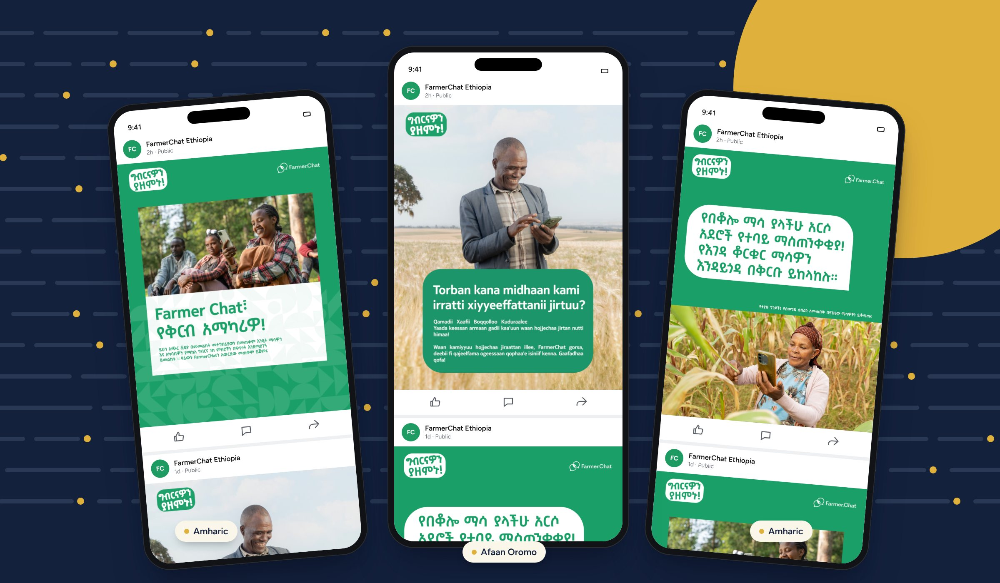
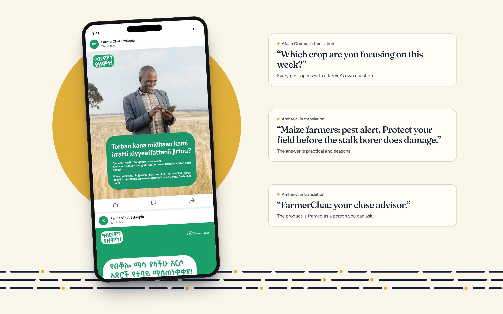
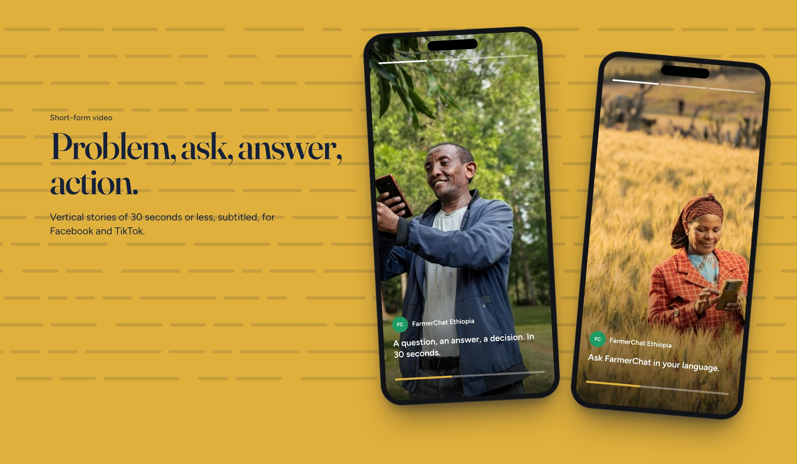
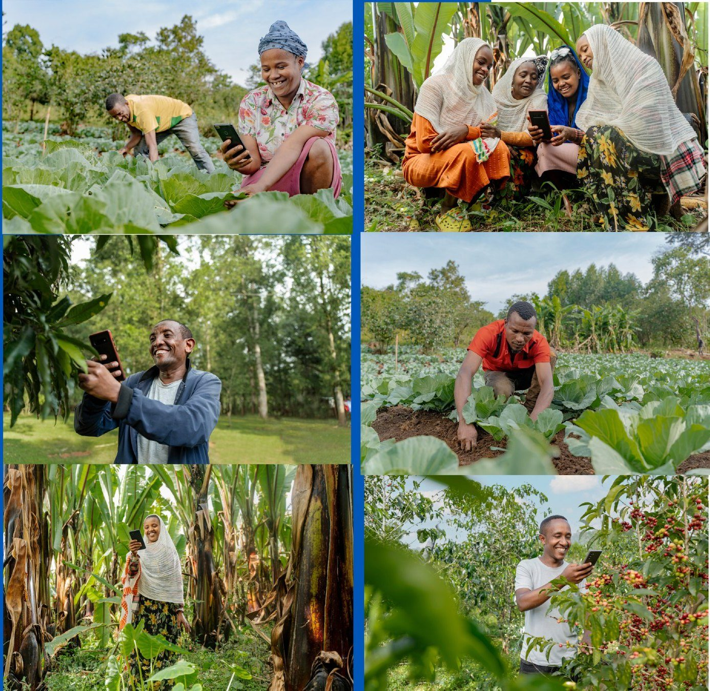
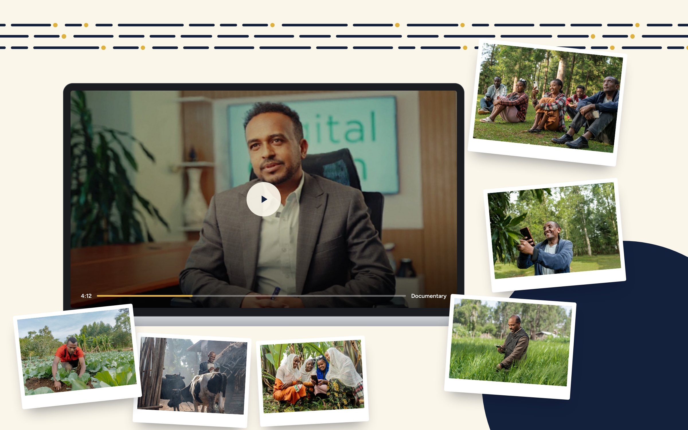
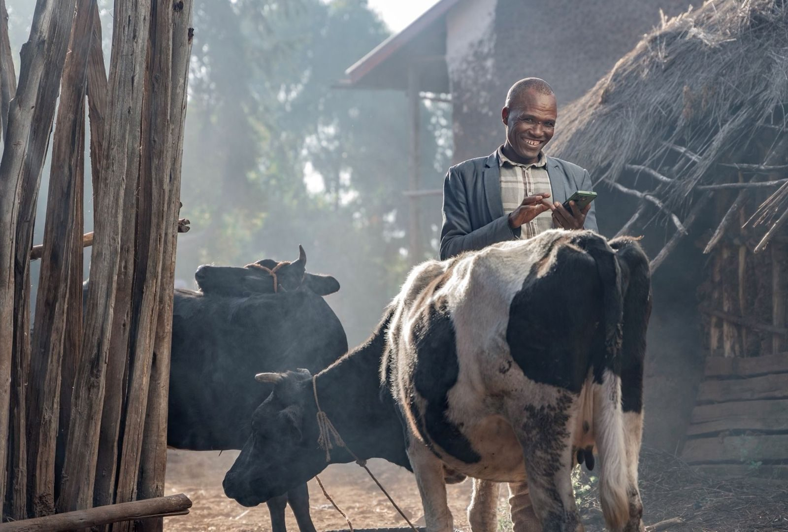

Work · SBCC case note
Making AI make sense to a farmer.
Digital Green built FarmerChat, an AI assistant that gives farmers and extension workers agricultural advice through photo, voice and text. My job, with the team at Youthopians, was the behaviour change side: get farmers to see it as help, try it, and come back.
- Client
- Digital Green Foundation, Ethiopia
- Discipline
- Social and behaviour change communication (SBCC)
- Where
- Jimma, Arsi and Dilla, Sidama
- When
- 2024 to 2026

At a glance
- SBCC strategyAudience analysis, barriers, message pillars and channel roles.
- Field productionFilm and photography with real farmers in three regions.
- Local languagesContent in Amharic and Afaan Oromo, audio in three languages.
- A content systemDocumentary, short video, social posts and a 60-image library.
The problem
Farmers don’t need to understand AI.
FarmerChat solves a real problem with fairly complex technology. The people it is for are smallholder farmers, many with low literacy, who speak different languages and live with weak connectivity. Digital Green also had several donors to satisfy, and needed proof of real use.
Seen as a behaviour change problem, the job was not to explain a technology. It was to move each audience from “here is an AI tool” to “here is something that can help me”, and then to a first question.
The idea
A farmer has a question. FarmerChat has an answer.
- ProblemA farmer runs into a pest, a crop issue or a farming decision.
- AskThey ask FarmerChat, by photo, voice or text.
- AnswerFarmerChat gives relevant guidance in their language.
- ActionThey act on it in the field.
Every piece of content followed this shape, so a farmer could see the whole behaviour in thirty seconds. The campaign went out in Amharic as ግብርናዎን ያዘምኑ, “Modernise your farming”.
Message pillars
Five pillars, one behaviour.
Each content pillar did a specific behaviour change job, from showing what to ask, to proving people like you use it, to making the first try feel safe.
- Ask anythingA farmer meets a real problem and asks.Shows what it is for
- Farmers lead the wayFarmers and extension workers using it, on camera.Social proof
- In your languageVoice, text and subtitles in familiar languages.Access and ease
- From question to actionAn answer becomes a decision in the field.The payoff
- The help behind itSimple visuals of the AI and data behind the advice.Trust
The campaign
Built for the phone a farmer already has.

Questions, not features
Every post leads with the kind of question a farmer would actually ask, in their own language, next to a real farmer from the shoot. The answer and the invitation to try FarmerChat come after.

Thirty seconds, one behaviour
Facebook and TikTok carried the farmer-facing stories as vertical videos of 30 seconds or less, subtitled, each walking through problem, ask, answer and action. LinkedIn carried impact and partnership stories for donors.

In the field
Real farmers, real fields.
We didn’t build this from a desk. The team filmed and photographed in Jimma, Arsi and Dilla, and Sidama, with farmers, extension workers and their communities at the centre, and with consent recorded for everyone featured.
Women extension agents came up in the research as important FarmerChat users, so they are part of the visual story, not an afterthought.


Language and story
One product, many local realities.
Ethiopia is not one audience. Campaign content was made with Amharic, Afaan Oromo, Sidamgna and English in mind, with native speakers on voice, subtitles and calls to action: adapted, not just translated. For the farmers who read least, we made audio content and voice notes in Afaan Oromo, Amharic and Somali.
Above the campaign sat a documentary connecting Digital Green’s story to FarmerChat and the people using it, for partners and donors.

What we made
One story, many outputs.
Results
What the communication was for.
The aim was use, not awareness: farmers asking questions and acting on the answers. These are Digital Green’s own published figures for FarmerChat. They show the behaviour the campaign was built to drive; they are not a measure of the campaign alone.
V1V2 Ethiopian farmers ask the most questions of any market.
Sources: Digital Green, FarmerChat V2 launch performance (July 2026) and About (June 2026); 60 Decibels impact study cited by Digital Green, February 2026; CGIAR, HaFAS at Ethiopia’s digital extension forum (June 2026).

What the client said
“They were organized, patient, and genuinely fun to work with. The team understood the brief quickly and captured exactly the energy we needed for FarmerChat.”
The takeaway
Show the person, not the product.
Behaviour change happens when people see someone like them doing the thing, in their language, and getting something out of it. Everything here, from the posts to the documentary, was built on that one idea.
If you have a product or programme that people find hard to understand or hard to try, that’s the conversation I’d start with.